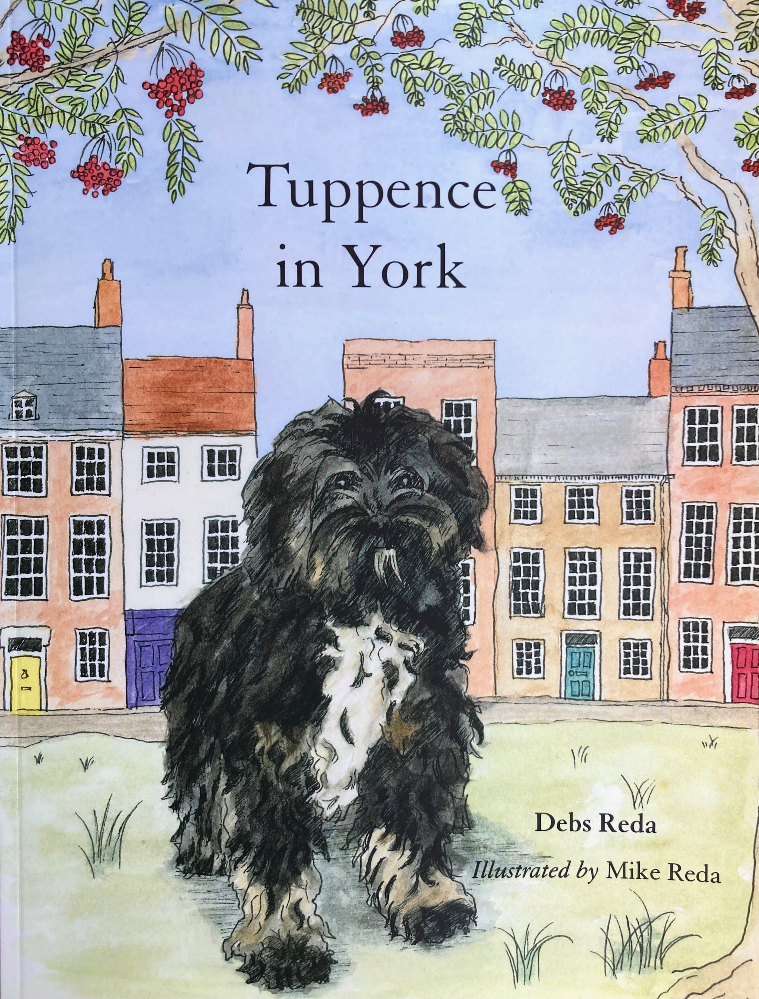
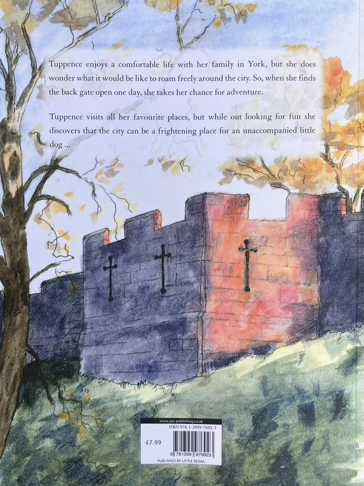

Tuppence in York
A children's picture book written by my wife, Debs, which I illustrated. We published it in 2024. All illustrations are pen and ink drawings with watercolour washes. Those who know York will recognise many scenes. Copies are for sale in Upside Down Designs and Topping and Company. You can also buy or borrow a copy from York Library. If you'd like to buy a copy directly from me, just drop me a message on the email address below.



About Me
I am an impressionist and tonalist artist based in York. I paint mostly from life en plein air using oil colour. I occasionally work in charcoal, pen and ink, and watercolour.
Exhibitions
- The Golden Ball, Bishophill - TBC
Past Exhibitions
- Blossom Street Gallery, York - 2025
- The Saltbox Gallery, Helmsley - 2024
- Spark York - 2024
- The New Holgate, York - 2024
- York Open Studios - 2024